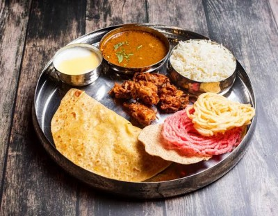

Puran Poli

Puran Poli is a flatbread stuffed with a sweet lentil stuffing. In Marathi language the sweet stuffing is known as Puran,
and the flat bread is called Poli. While puran poli is considered a sweet, the ingredients make
it quite healthy.
Steps:
- Firstly, in a large bowl soak 1½ cup chana dal for 1 hour.
- Drain off the water and transfer it to the cooker.
- Add 1/4 tsp turmeric, 1/2 tsp ghee, 3 cup water.
- Pressure cook for 3 whistles on medium flame.
- Now drain off the water separating dal and water.
- Transfer the dal to a large kadai.
- Add 1½ cup jaggery and mix well.
- Once the jaggery melts, start to mash the dal.
- Mash until the dal turns smooth paste. you can alternatively, grind the dal and jaggery into the mixi jar.
- Keep cooking until the mixture thickens and hold the shape.
- now add 1 tsp ghee and ½ tsp cardamom powder and cook for a minute, or until the mixture starts to separate the pan.
if the mixture is undercooked, then the stuffing will be sticky and will be difficult to make a ball.
- Transfer to the plate and cool slightly. make sure not to overcook, else the stuffing turns hard.
- Grease hands with ghee and makes ball-sized stuffing.
- Finally, puran is ready. keep aside.
- To prepare poli firstly, in a large bowl take 2 cup wheat flour, 1 cup maida, ¼ tsp turmeric, ¼ tsp salt and 2 tbsp oil.
- Mix well making sure all the ingredients are well combined.
- Now add water as required and start to knead the dough.
- Knead to a smooth and soft dough adding water in batches.
- Grease the dough with 2 tsp oil, cover and rest for at least 1 hour.
- After 1 hour, punch and knead the dough again.
- Pinch a ball sized dough and make a smooth ball.
- Form a cup by pressing the dough from the sides.
- Place a ball sized prepared puran (dal stuff).
- Start to stuff inside by pulling the dough without having any pleats.
- Now seal the dough without any cracks.
- Dust the ball with maida and flatten slightly.
- Now roll the holige gently, without putting much pressure.
- Roll as thin as possible and making sure the puran is distributed uniformly.
- Now cook the puran poli on hot tawa keeping the flame on medium.
- Flip over once the base is half cooked.
- Spread the ghee on both sides and cook well.
- Puff the puran poli, making sure to cook uniformly.
- Finally, enjoy puran poli with ghee or milk.
Puran Poli Tutorial